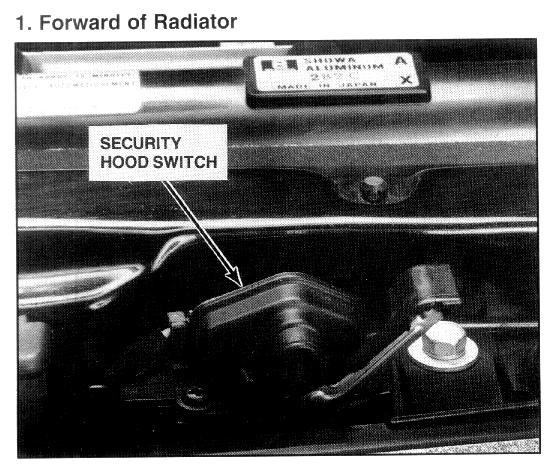

Operation CHARM
: Car repair manuals for everyone.
Home
>>
Acura
>>
1994
>>
Vigor L5-2451cc 2.5L SOHC G25A4 FI
>>
Repair and Diagnosis
>>
Body and Frame
>>
Doors, Hood and Trunk
>>
Hood
>>
Hood Switch / Sensor
>>
Hood Sensor/Switch (For Alarm)
>>
Locations
Hood Sensor/Switch (For Alarm): Locations

Forward of Radiator